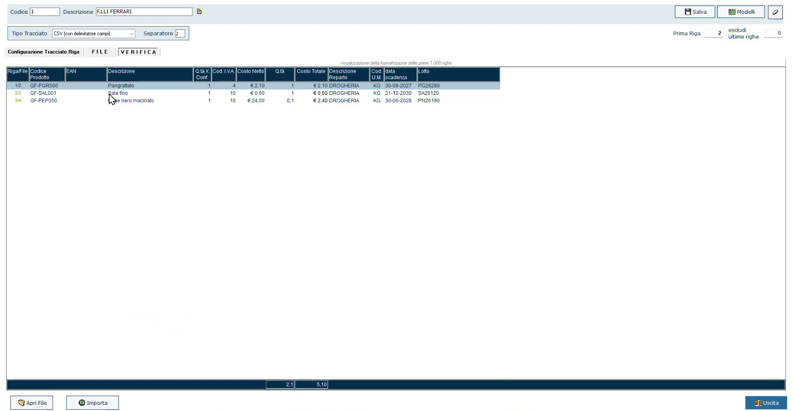
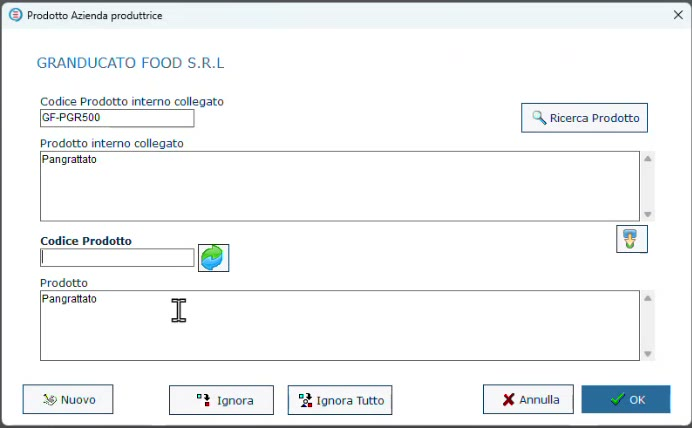
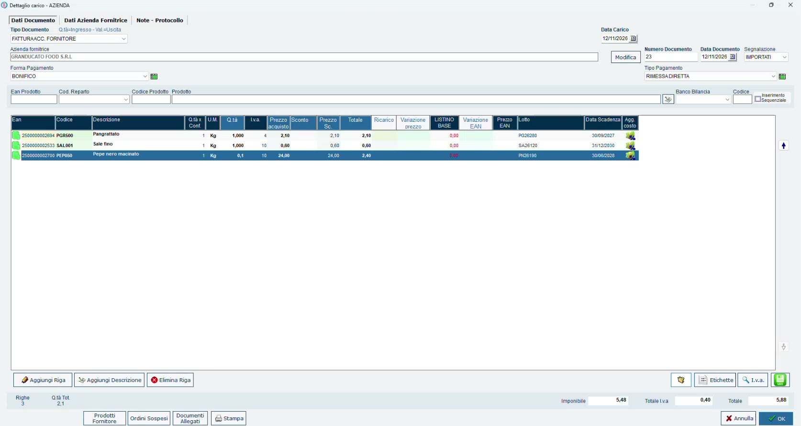

Carico degli ingredienti da CSV
Obiettivo
Caricare a magazzino gli ingredienti acquistati, acquisendo dal file del fornitore lotti e date di scadenza in un'unica operazione, e collegare i codici del fornitore ai codici interni.
Prerequisiti
- Fornitore con Gestione Prodotti e Aggiornamento Listino attivi (Prodotto finito e ingredienti).
- Il documento del fornitore (DDT o fattura) e, se disponibile, il relativo file CSV.
Passaggi
1. Apri il documento di carico
- Apri Carichi e premi Aggiungi.
- Scegli il Tipo Documento. Con la fattura accompagnatoria si aggiornano insieme la quantità in ingresso e il valore; in alternativa usa la bolla di carico (DDT).
- Indica il fornitore, il Numero Documento e la Data Documento.
- Compila, se serve, la Segnalazione (nell'esempio IMPORTATI): è un'etichetta libera utile per ritrovare il documento con una ricerca.
- Indica forma e tipo di pagamento.
2. Importa le righe dal file
Le righe si possono inserire a mano, ma se il fornitore consegna un file conviene importarlo.
- Avvia l'importazione da file e scegli il modello di tracciato.
- Seleziona il file CSV ricevuto dal fornitore.
- Nella scheda VERIFICA controlla l'anteprima delle righe: codice prodotto, descrizione, quantità, costo, reparto, data scadenza e lotto.
- Premi Importa.

L'anteprima dell'importazione: le ultime due colonne sono data di scadenza e lotto.
Un tracciato per fornitore
Conviene creare un modello di tracciato per ciascun formato di CSV del fornitore, anziché modificare il file ogni volta. Data di scadenza e lotto sono i due dati che permettono di caricare tutto in un'unica soluzione.
3. Collega i codici del fornitore ai tuoi
La prima volta che arriva un prodotto di quel fornitore, il programma chiede a quale prodotto interno collegarlo: puoi cercarne uno esistente oppure crearlo.

Il collegamento tra il codice del fornitore e il prodotto interno.
Collegare i codici ha tre vantaggi:
- lo stesso ingrediente acquistato da fornitori diversi resta un unico articolo: non si moltiplicano inutilmente i PLU nel database;
- alle importazioni successive le domande non vengono più fatte;
- si costruisce il listino del fornitore: si può sapere quando un prodotto è stato comprato l'ultima volta e a che prezzo.
Il codice fornitore non è obbligatorio
Non è obbligatorio specificarlo, ma è ciò che evita di rispondere alle stesse domande a ogni carico.
4. Controlla e conferma
Le righe importate riportano per ogni ingrediente quantità, prezzo di acquisto, Lotto e Data Scadenza. Conferma il documento con OK.

Il documento di carico compilato dall'importazione.
Il lotto sul documento è un obbligo del fornitore
Non tutti i fornitori sono attrezzati per consegnare un file, soprattutto i più piccoli. Tutti però hanno l'obbligo di legge di riportare il lotto sul documento, che sia una bolla, un foglio di carico o un DDT: in quel caso lotto e scadenza si inseriscono a mano.
Verifica
- Nella scheda di ogni ingrediente la giacenza è aumentata.
- I lotti caricati sono disponibili come origine quando si esegue una trasformazione (Eseguire una trasformazione).
Errori comuni
| Problema | Causa probabile | Rimedio |
|---|---|---|
| A ogni carico viene richiesto il collegamento del prodotto | Il codice del fornitore non è stato collegato al prodotto interno | Completa il collegamento alla prima richiesta |
| Lo stesso ingrediente compare come più articoli | È stato creato un prodotto nuovo invece di collegarlo a quello esistente | Collega i codici dei diversi fornitori allo stesso prodotto interno |